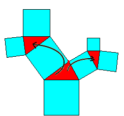

|
We repeat the following operations. 1. Draw a square. 2. Attach a triangle to one of its sides. 3. Attach two squares along the free sides of the triangle. 4. Attach two flipped triangles. 5. Attach four squares. еее Refer to the applet .Tree of Pythagoras. |
 |
|
1.Press "Step up" or "Step down" button. What do you observe? Find as many points as you can. 2.Drag red point. What do you observe? 3.What does the whole figure become, when the triangle is equilateral? |